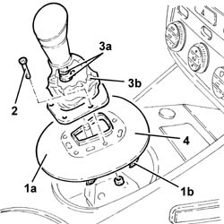

2127A20 cover of control lever/handle for manual gearbox with hydraulic selection - r r
- Path
- Procedures > 21 GEARBOX > 2127 ELECTRO-HYDRAULIC SELECTION. GEARBOX EXTERNAL. CONTROLS > 2127A hydraulic transmission external linkage > 2127A20 cover of control lever/handle for manual gearbox with hydraulic selection - r r
- Kind
- repair procedure (removal / refitting; the operation number is the code)
- Applies to
- engines: 2.0 TS, 3.2 V6; all production periods
- Interactive page
- https://sloeber94.github.io/elrnDB-a147/en/#/3025139
Applies to: engines: 2.0 TS; all production periods; only with equipment: Cambio robotizzato
 Removing
Removing
 Refitting
Refitting1. Lift up the gear lever trim (1a) from its housing, as necessary, after having released the fixing springs (1b).
2. Undo the bolts fixing the gear lever/grip to the trim.
3. Open the bands (3a) and remove the electro-hydraulic selection manual gearbox gear lever/grip (3b).
4. Remove the electro-hydraulic selection manual gear lever trim.

Applies to: engines: 2.0 TS; all production periods; only with equipment: Cambio robotizzato
Refitting
RemovingPlace the electro-hydraulic selection manual gear lever trim back in its housing.
Place the electro-hydraulic selection manual gear lever/trim back in its housing and fix it using the bands.
Tighten the bolts fixing the manual gear lever/grip to the trim.
Place the manual gear lever trim back in its housing making sure that the fixing springs are attached.
Applies to: engines: 3.2 V6; all production periods; only with equipment: Cambio robotizzato
Proceed as described in Refer to op.. 7040L37 gear lever plate - r r .